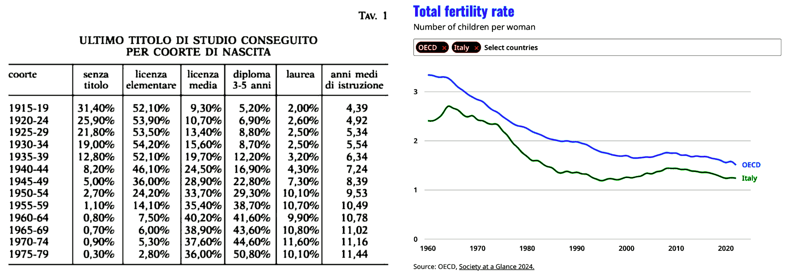

Italia: fuga di cervelli e falso documentale
1st edition, articolo scritto a partire da alcuni post pubblicati su LinkedIn nei giorni precedenti.
post #4 (2025-07-04) - post #3 (2025-07-03) - post #2 (2025-07-03) - post #1 (2025-07-01)
2nd edition, aggiunge la conclusione che va a proiettare il ragionamento sviluppato su scala sistemica.
Tasso di educazione in Italia
Abbiamo prodotto più laureati di quanti la nostra economia sia in grado di digerirne, nulla di più e nulla di meno.
In Italia i laureati STEM mancano e quindi questo non è vero. Invece è vero che esiste un cartello fra aziende che non si fanno concorrenza nell'assunzione dei talenti perché non sono esse stesse competitive. Quando le aziende sono competitive anche gli stipendi lo sono, o tendono ad esserlo.
Il problema invece è che il sistema universitario ha prodotto TROPPI laureati in alcune materie che non hanno uno sbocco professionale e questo è chiaramente un limite: ci sono più avvocati a Roma che in tutta la Francia nonostante la Francia conti 80 milioni di abitanti. Un esempio classico fra tutti.
Comunque ho qualche dubbio sulla presentazione di questi numeri e la ragione è abbastanza semplice: fino al 1980, al più il 12% della popolazione è laureata mentre attualmente la media è di circa il 20% che comunque è la metà di quella europea (41%). Significa che fra il 1980 e il 2000 abbiamo prodotto tanti laureati da portare il 12% della popolazione al 20%. Ma il numero di nascite è in progressiva diminuzione, rispetto al 1960. Ciò porterebbe a pensare che oggi il 40% degli 2000-2005 avrà una laurea.
L'evoluzione del sistema Italia
Ritornando alla questione di cui sopra, il problema non è che il sistema non riesca a "digerire" i troppi laureati che produce, è invece il contrario, il sistema non è abbastanza competitivo e non lo è perché ha prodotto troppi laureati in materie non STEM che quindi NON portano progresso tecnologico, quindi non portano innovazione, quindi non portano competitività e quindi il sistema nel suo complesso perde terreno rispetto ad altri paesi.
Da qui la fuga di cervelli. Ma se la Germania che ha il 32% di laureati quindi meno della media — anche perché che il tasso più alto di laureati si trova nei paesi ex-comunisti dell'est Europa — attira i cervelli, allora sicuramente non è una questione che l'Italia produca "troppi" laureati. Si potrebbe dire che l'Italia produca "relativamente troppi laureati" rispetto a quelli che riesce ad impiegare (tesi sopra esposta) ma anche questo è sbagliato, perché gli STEM mancano. Quindi ne produce troppi del tipo sbagliato.
Se ne produce e ne ha prodotti troppi del tipo sbagliato questo sarà vero anche per i diplomati e nel complesso, laureati e diplomati del tipo sbagliato hanno portato il sistema Italia ad essere "sbagliato" rispetto al trend Europeo e globale ovvero poco competitivo. É anche così che siamo passati da essere 4° potenza industriale a terzo mondo (solo servizi) perché con l'automazione delle industrie, non sono i laureati che devono fare gli operai ma sono i laureati che devono fare gli automatismi.
Coloro che NON sanno fare, al più possono vendere quindi servizi invece di industria, il paese non ha nucleare quindi importa energia, non produce quindi non esporta prodotti ma non esporta nemmeno tecnologia. Amen.
Approfondimento con Gemini
In questa
conversazione o la sua
trascrizione.
Dall'industria, ai servizi, al falso
L'Italia che era negli anni '80 la quarta potenza industriale al mondo ha visto cambiare sensibilmente la sua struttura economico-produttiva in questi 40 anni. Oppure, considerando l'ingresso della Cina nel WTO, sarebbe più corretto affermare che l'Italia ha proseguito nel suo piano "industriale" mentre il resto del mondo è andato in direzione opposta.
Due affermazioni complementari che nel loro complesso meritano di essere spiegate attraverso due casi recenti che potremmo considerare emblematici, ognuno dei due nel loro specifico contesto ed entrambi complementari come le due affermazioni di cui sopra.
Fare manutenzione di qualità a prezzo e intensità tecnica elevati oppure risparmiare sui costi di gestione e pagare un'assicurazione che copra eventuali incidenti o danni? Una domanda che è solo un caso specifico del dilemma manageriale "do or buy".
La migliore assicurazione è la scelta di un servizio di manutenzione eccellente oppure è preferibile risparmiare sui costi di manutenzione e pagare una polizza? Da un punto di vista manageriale la seconda scelta è un jolly di tipo omnibus.
Quando il management ha
zero cognizioni tecniche diventa anche l'unica opzione e quando c'è un'unica opzione su molti, troppi, tavoli è ovvio che il premio cresce così come la competizione sui costi fino al punto in cui i sinistri diventano la norma e non più l'eccezione.
D'altra parte quando il management ha
zero cognizioni tecniche la loro percezione si limita alla superficie, quindi il controllo qualità si fa sui documenti, e quando questo diventa la via maestra dove persino i controlli a campione sono un'eccezione, è chiaro che il falso documentale diventa il modus operandi come destinazione finale di una deriva patologica.
In sintesi, la radice del problema è la stessa, le manifestazioni del problema invece prevedono molte diramazioni e varietà rendendo apparentemente difficile riconoscere l'origine del problema anche perché essendo un problema sistemico è un banale "così fan tutti". La banalità del Male, appunto.
La gestione del rischio al collasso sistemico
La gestione del rischio ha sempre un orizzonte temporale definito e per estensione su una finestra temporale molto lungo, l'esempio più emblematico è quello della gestione del cambiamento climatico, che recentemente è stato indicato come causa del collasso dell'insegna di Generali in cima alla torre del loro HQ a Milano.
Due questioni scottanti che non riguardano solo Generali ma anche Boeing e Leonardo tanto per fare nomi di società che non sono minuscole eppure sono afflitte dallo stesso problema che apparentemente può assomigliare all'incidente di Costa Crociere ma invece è totalmente diverso. Perché quello della Costa Concordia è stato delegare un certo grado di gestione del rischio al comandante della nave e la gestione del rischio relativa era selezionare i capitani in modo prudente. Quindi un problema di mancanza di doppio check.
Quello che invece stiamo osservando in Italia, come catena infinita di disservizi, rotture, ritardi, fallimenti e cedimenti come nel caso delle Generali è un problema sistemico che riguarda un sistema che NON ha percezione della realtà, a differenza dei capitani delle navi, ma pretende di fare il controllo dei costi, della qualità e del rischio SOLO attraverso la carta: se i documenti sono in ordine allora tutto è in ordine. Senza mai verificare, o non verificare in modo adeguato, che documenti (descrizione) e realtà (sottostante) siano allineati e che lo siano in modo funzionale allo scopo.
Colpa del cambiamento climatico? Il cambiamento climatico non è altro che il risultato di lungo periodo di una progressiva perdita di connessione con la realtà dove le carte, la narrativa, i numeri non sono più una rappresentazione funzionale della realtà ma vengono "prodotti" per adattarsi al "mercato" cioè vendere ciò che sul momento conviene vendere, domani è un altro giorno. In questo, ovviamente, l'Italia è in vetta: un paese che ha cancellato l'idea di un domani, al punto da vivere della nostalgia del passato.
Il collasso della gestione, da Generali a Leonardo
Perché il collasso dell'insegna ha a che fare con il core business di Generali?
Fondamentalmente perché riguarda la gestione del rischio e se Generali non sa farla correttamente per se stessa allora si pone la questione di come sappia farla per i clienti e per quanto riguarda le polizze assicurative, stante che Generali è in forte attivo, se esse siano effettivamente concorrenziali perché per poterlo essere il rischio deve essere correttamente computato in maniera da definire il premio concorrenziale, ammesso che il mercato sia libero e vi sia effettiva concorrenza.
Si noti che in quei mercati dove i contratti sono tipizzati come nel settore RC auto, Genertel è stata una delle prime a sbarcare sul digitale facendo risparmiare sui costi della rete di vendita ma Prima Assicurazioni ha dimostrato che si poteva fare molto meglio in termini di competitività valutando in maniera più precisa il rischio e quindi abbattendo il valore dei premi.
Ci sarebbe molto da dire a riguardo ma torniamo al concetto di collasso sistemico della gestione del rischio. L'amministrazione della torre cerca, come ogni gestione amministrativa, di ridurre i costi che alla fine si traducono in una più carente manutenzione o di un'eccessiva diluizione della sostituzione della struttura.
Il controllo dei costi è sulla carta, il controllo della qualità del servizio è sulla carta e quindi il controllo del rischio è sulla carta. Perché l'azienda di manutenzione che fa meno a meno prende il contratto fintanto che il meno è anche meno di abbastanza, poi interviene l'assicurazione. Quindi è un circolo vizioso che in questo caso dove assicurazione, torre e amministrazione fanno riferimento ad un'unica proprietà si manifesta nella sua massima espressione emblematica.
Un altro caso iconico è Boeing, Leonardo e le due aziende fornitrici di Brindisi.
Il caso Leonardo per i Boeing 787 e 477
ⓘ
2 luglio 2025 - Seimila componenti difettosi usati su 477 aerei Boeing 787: a processo due aziende di Brindisi e sette imputati saranno processati per aver fornito componenti difettosi per 477 Boeing 787. Le accuse: frode, attentato alla sicurezza e inquinamento. Tra le parti civili, Leonardo e Boeing. Processo al via nel 2026. — lnkd.in/dk-WtGz6
Una domanda sorge spontanea: chi doveva fare il quality check della componentistica in ingresso e/o al montaggio?
Leonardo acquistava quei componenti dalle aziende brindisine per integrarli nei propri moduli o sistemi destinati a Boeing, nel quadro della sua collaborazione industriale con Boeing. Leonardo è fornitore strategico per la struttura della fusoliera del 787. Il caso evidenzia la vulnerabilità della supply chain aerospaziale, dove subfornitori minori possono compromettere interi programmi industriali globali.
Sintesi della filiera
Aziende Brindisine (componenti difettosi)
Leonardo S.p.A. (assemblaggi strutturali e integrazione)
Boeing (uso finale su 787)
Leonardo S.p.A. effettua controlli di qualità sui componenti ricevuti, ma il sistema ha mostrato delle lacune in questo caso specifico:
Prima di aggiungere un’azienda come MPS (Manufacturing Process Specification) nella propria lista, Leonardo valuta la capacità produttiva e la conformità ai requisiti aerospaziali tramite analisi documentali e revisioni dei processi
Dove il sistema ha fallito
Mancanza di controlli fisici a campione. Gli audit condotti (sia interni che esterni) non includevano test casuali o ispezioni fisiche sui pezzi al momento del ricevimento. Leonardo si basava soprattutto su approvazioni di terze parti senza controllo tangibile del materiale
Scoperta tardiva del problema. Il difetto, consistente nell'uso di titanio puro anziché della lega adeguata, venne identificato solo tra fine 2020 e inizio 2021 dopo segnalazioni di Boeing e approfondimenti interni. Questo ha fatto emergere la debolezza dei controlli originali.
Fonte delle informazioni:
ChatGPT e realtiva
trascrizione nella quale i primi due prompt riguardano il meme "Fuckaldo" sul collasso dell'insegna delle Generali alle 6.45 circa del 30 giugno 2025,
notizia.
Il Cambiamento climatico. questo sconosciuto
Se le strutture d'acciaio collassero sopra i 40°C allora a Dubai dovrebbero ancora vivere nelle tende, e non mi pare che sia così. Che poi il cambiamento climatico, per la parte imputabile al c.d. antropocene possa seppur marginale, possa generare un grande cambiamento a livello globale, è realistico ma, purtroppo, difficile da prevedere con accuratezza. Certamente non fa crollare le impalcature che pure sono tirate su da gente che non sono certo ingegneri.
Le dichiarazioni che riportano "cambiamento climatico" o "clima torrido" non si riferiscono a quel fenomeno in senso letterale, ma al cambio di potere che sta generando un clima di alta tensione. Capisco che sia una lettura molto alla Men in Black, ma d'altronde credere che una struttura d'acciaio collassi per il caldo quando ciò non avviene nemmeno nei ponteggi che sono tirati insieme da gente che la laurea in ingegneria non l'ha mai vista, fa ridere ancora di più.
Perché è importante aver dato una lettura profondamente alternativa, quasi sarcastica riguardo al treno di articoli su varie testate giornalistiche che sostenevano essere il cambiamento climatico la causa del collasso dell'insegna di Generali?
Perché, tanto è più corretta l'analisi di un collasso sistemico dovuto ad un handicap del management italiano che negli ultimi 40 anni ha causato una deriva patologica che come esito ultimo ha il falso documentale come modus operandi standard (ovvero assenza di controlli reali, ma solo documentali:
così fan tutti) e l'assicurazione come jolly per lo scaricabarile delle responsabilità (assicurazione must-have is the new negazione dell'handicap manageriale:
tanto siamo assicurati).
Curioso che alcuni su LinkedIn abbiano portato come termine di paragone il caso della Costa Concordia, che però c'entra come i cavoli a merenda, però in qualche misura è affascinante
( 1 ) per non usare termini dispregiativi sebbene più consoni, abbinare una tragedia con morti all'idea che se Costa Crociere è sopravvissuta a quel disastro allora non è un problema nemmeno per Generali.
Deve piovere un meteorite dal cielo? Deve cadere la Luna? Deve esplodere un super-vulcano? Deus-vult quindi nemmeno tutto ciò basterebbe. Stupidity kills.
Nota #1
Alzare l'asticella crea una
pressione evolutiva, che in tutto e per tutto è equivalente ad uno stress per il sistema — ricordiamoci infatti che la selezione naturale opera sulle specie, quindi sui gruppi, e
non sugli individui — poiché lo stress non piace allora si evita.
Ma non è detto che se noi, per noi stessi, abbassiamo l'asticella gli altri non l'alzino magari in principio solo per loro stessi e poi per confronto diretto ovvero concorrenza sul mercato, l'alzino anche per noi. La produzione Cinese è sempre stata sottovalutata in Italia perché "
tanto la loro qualità è bassa, e poi anche loro saranno costretti ad alzare i prezzi quando gli operai chiederanno più soldi".
Però non è andata così, non solo perché i Cinesi sono diventati 1.3 miliardi nel frattempo, ma perché sfornando STEM a ciclo continuo e a volumi industriali, sono passati alla produzione automatica che fa alzare gli stipendi degli operai ma anche i volumi di produzione e la qualità.
Uno scenario del tutto ovvio a posteriori ma in realtà era ovvio anche a priori — come in effetti la Germania sapeva e coerentemente si comportava già all'epoca dello SME cosa che noi gli rinfacciamo come vantaggio d'ingresso nell'Euro, loro 1:1 marco:euro e noi 2K:1 lira:euro, però eravamo anche quelli che si credevano furbi a svalutare la lira per agevolare l'esportazione della produzione industriale nazionale — o lo sarebbe stato ovvio a priori agli occhi di una classe dirigente con un'estrazione STEM piuttosto che
solo umanistica.
Perché alla fine della giornata, cari signori, la realtà è che un informatico può leggere e capire Omero ma un filosofo non sa scrivere e debuggare codice. Oplà, il disastro è tutto qua!
Conclusione
La procura che indaga per "crollo colposo", quindi il titolo resta penalizzato (+0.03%, nella seduta del 2 luglio 2025).
L'indagine è irrilevante, gli investitori di Generali è risaputo essere dei keepers: alcuni addirittura lo sono da tre generazioni. A questo tipo di investitori che siano azionari o obbligazionari, interessano i dividendi più che il valore del titolo che qualora incassato genererebbe un plus-valore tassabile mentre come asset, specialmente in un paniere, il profilo di tassazione è assai più "debatable" in termini fiscali.
Cosa che generalmente porta gli investitori di lunga data a usare quegli asset come garanzia per eventuali finanziamenti piuttosto che cederli. Ecco quindi dove il concetto di responsabilità incalcolabili entra in gioco: se per qualche ragione, gli avvocati che oggi per legge sono gli unici che possono incassare una polizza per i clienti, e che magari sono anche investitori Generali, però non lo comunicano ai beneficiari ai quali fanno credere che penda una procedura di accertamento lunga, tediosa e magari anche dispendiosa, la questione diventa patologica e sistemica.
Mentre questo esempio può apparire come un'eccezione all'interno di un sistema sano, all'interno di un sistema in cui la coerenza documentale è tutto ma astratta dalla realtà è ragionevole pensare che possano esserci tante diverse eccezioni, che quindi smettono di essere tali, e diventano molti modi di relazionarsi rispetto ad una situazione come quella descritta in questo articolo.
Se poi includiamo in questo scenario anche la domiciliazione, la consegna della posta che oggi viene effettuata mediante personale sottopagato e precario, spesso soggetto ad alta turnazione, ad una condizione di incertezza sociale in cui molti sono ridotti alla sopravvivenza perché in condizioni di povertà relativa o assoluta, del calo demografico per il quale sempre meno persone guardano al futuro in una prospettiva di lungo termine, che anche le attività imprenditoriali e consulenziali sono costrette a costanti cambiamenti incluso un alto turnover di chiusure-ristrutturazioni-riaperture anche in funzione di normative che stravolgono ogni continuità e capitano senza un piano d'intenti razionale e strutturato, infine aggiungiamo che la digitalizzazione amplifica tutte queste problematiche e i rischi ad essi connessi, appare naturale che il sistema sia destinato al collasso.
Perché un sistema progressivamente avulso dalla realtà diventa autoreferenziale in modo patologico, quindi crea bolle finanziarie e mediatiche, che diventano sempre più frequenti e sempre più grandi. Come quando la temperatura dell'acqua sale e comincia a bollire fino poi ad arrivare al punto di evaporazione.
In effetti, il concetto "too big to fail" che non ha salvato la banca d'investimento Leman Brother è anche il motivo per il quale si ignora il pericolo sistemico e nell'ignorarlo si evita di mitigare il rischio che un cigno nero (collasso sistemico) possa presentarsi, quindi diventa possibile e poi inevitabile.
Related articles
Primo maggio, festa dei lavoratori (2025-04-17)
Mr. Spock about financial capitalism (2025-05-01)
Il cambiamento climatico questo sconosciuto (2024-12-14)
The paper money is financial communism (2024-07-31)
I sette livelli del biscottificio (2019-01-29)
La cartolarizzazione del lavoratore lkdn (2017-10-27)
Share alike
© 2025, Roberto A. Foglietta <roberto.foglietta@gmail.com>, CC BY-NC-ND 4.0